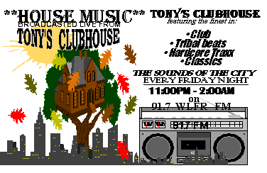

CLUBHOUSE SYNOPSIS
If I had to describe “TONY
TÓN'S CLUBHOUSE”, it would be done with one phrase--- “MEGABEATS”!!
Each and every Friday night on 91.7 WLFR, DJ Tony Tón dazzles
the airwaves for the true devoted pioneers of House, bringing a collage
of hard-core sounds. The “CLUBHOUSE”
thrives on tribal rhythms, raw trax, hard-core vocals,
latin house, and sheer underground
sounds. Music containing that
strong “thump” in the Bass...... fierce “pound” in the drum......and
strong soul from the chords......no matter the style of vibrant sounds,
hard-core beats and vocals are welcomed “open-armed” and included in the
“CLUBHOUSE” rotation. “The
harder the bang, the louder the noise”-- An aphorism that deems much truth
inside, “TONY TÓN'S CLUBHOUSE”!!
|
 |
The art of mixology is a concept well mastered at the “CLUBHOUSE”, creating music masterpieces with the aid of instrumentals, dub versions, accapellas, classics, and the “forget-me-not” house jams. This technique combined with the latest and greatest releases in house music allows for an authentic and original style. |
The “CLUBHOUSE” exceeds the bounds of mediocre, and Tony Tón takes pride and excellence in superb mixing and perfect blends.
Although “vigorous
vibrations” are mainstream inside the
“CLUBHOUSE”, on occasion, the “CLUBHOUSE”
will stray from the norm and delve into other realms on the “House
Spectrum”. For the mellow house headz who prefer “the smooth”as opposed to Groove, DJ Tony Tón appeases the listeners with a
“jazzy” house flavor sound-- providing a softer “art of noise” and a
milder tone for the ear drums. And,
yes, my God fearing house headz and those of virgin ears, Tony Tón robes up and
takes it to church, blessing the radio airwaves with deep gospel house sounds
and inspirational vibes-- a spiritual jubilee you don’t wanna miss!!
Whatever style or preference of house music, like the paper boy..... Tony
Tón delivers from week to week!! “TONY
TÓN'S CLUBHOUSE” broadcasts from Stockton State College, monopolizing
a wide radius stretching from Lakewood New Jersey, the Jersey Shores, Atlantic
City, Cape May, and all points in between.
The
“CLUBHOUSE” is always mixed "live"-- That's right, NO
TAPES..... NO REELS..... AND NO PRERECORDING!! Being a Deejay for 18+ years, I
adhere to the old fashion way-- 2 turntables (sometimes 4), a mixer, and a funky
concept!! Once the “CLUBHOUSE” is in session, Tony Tón delivers three strong hours
of uninterrupted House beats (all talking, other than scheduled interviews,
legal IDs, PSAs, and personalized drop carts is prohibited!!).
The “CLUBHOUSE”
has been in existence since the summer of '91, with yours truly mixologist DJ
Tony Tón alias "THE AWESOME", and my sidekick T.O. Sweet, (better
known as "Sweet Daddy"). Together
the "T2 Production" began to revolutionize South Jersey by
bringing them an urban style of music-- a style which before now, could only be
heard and appreciated in the underground clubs. By mid fall of '93, "Sweet Daddy" fled to “The
Big Apple” (New York City) to pursue a career in the radio industry, and
construct what is known today as “The Candy Store”
(WNYU).
Although he journeyed some 100 miles north of the “CLUBHOUSE”,
Sweet Daddy has, and always will be considered one of the chief architects of
the “CLUBHOUSE”! Since his flight the “CLUBHOUSE”
has undergone some minor reconstruction, and today in the new millennium, the “CLUBHOUSE”
still stands erect and in effect-- pumping harder than ever!!
Since its inception, the newest members and staff include, my engineer
Akili aka (Kili-Kil) and "Sal D...the host with the most".
Together we provide an innovative style and service for the true
connoisseurs of House Music.
The “CLUBHOUSE”
receives positive feedback from a diverse listening audience and encompasses a broad age
group: high school/college students, and "mad clubbers" from North
Jersey, Philly, and my hometown New York City.
Although hip-hop reigns supreme in these parts of the woods, the “CLUBHOUSE”
has made major imprints in these sandy Jersey Shores.
Over the years, we have "combed the mill" and acquired a
multitude of eager listeners, who have become very receptive to House music.
Our work at the “CLUBHOUSE” is far from over; our noble obligation and efforts
still lie in getting even more
individuals educated, interested, and involved with House music, so they too,
can experience a taste of virtual House reality. Thanks to the promoters,
supporters, and record companies, like yours, who service our radio station, this can be
made possible. Thank you for
supporting WLFR 91.7 FM, especially “TONY
TÓN'S CLUBHOUSE”, and feel free to visit or call anytime!!
My final remarks to all friends, listeners, and advocates of the
“CLUBHOUSE” being.....Cordiality exists to all who abide within”.....
“TONY'S CLUBHOUSE”
Sincerely,
DJ
Tony Tón
A*L*I*A*S
“The Awesome”